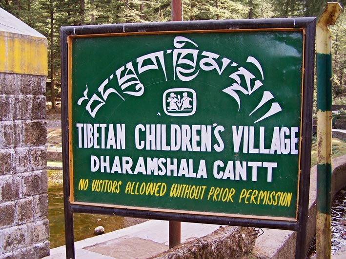
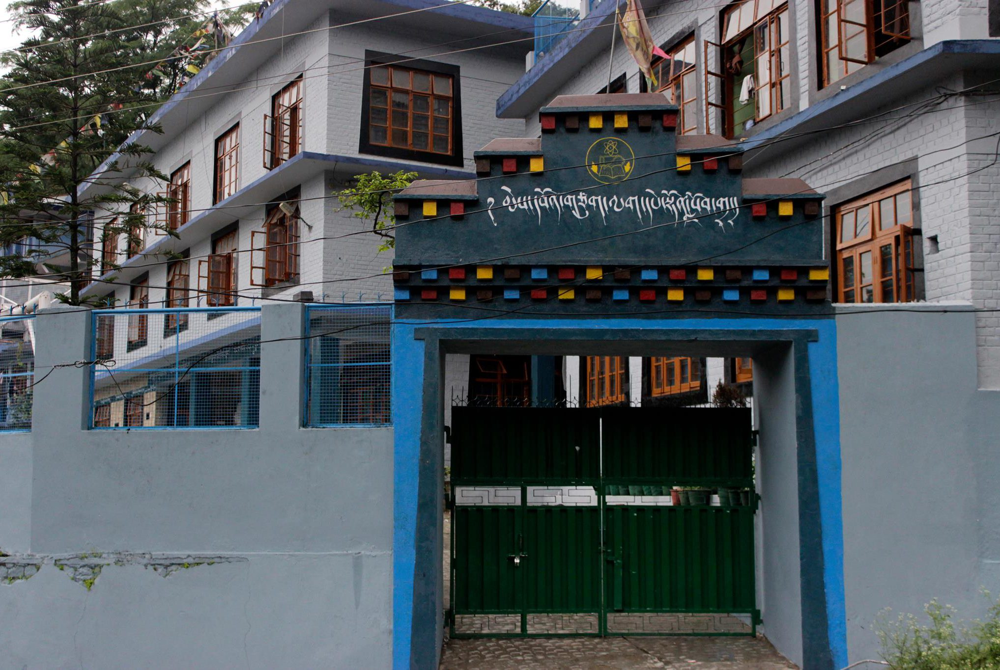
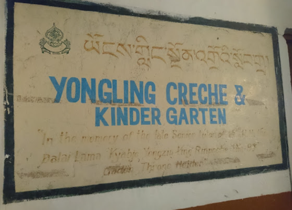

Partner Schools
TYI maintains direct programmatic partnerships with the following institutions in Dharamsala, India.
Tibetan Children's Village

Established in 1960, Tibetan Children's Village (TCV) provides holistic education and residential care for Tibetan refugee children across a network of schools in India, serving nearly 10,000 students while preserving Tibetan cultural identity.
Mewoen Tsuglag Petoen School

Founded in 2005 and managed by the Sambhota Tibetan Schools Society, this institution integrates modern curricula with Tibetan language instruction and cultural education for students in exile.
Yongling Crèche & Kindergarten

Established in McLeod Ganj in 1984, Yongling provides early childhood education and care for approximately 75 children, supporting working families within the Tibetan exile community.